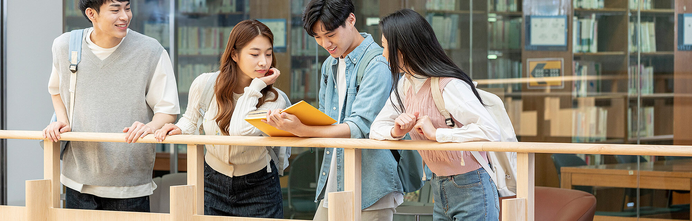

이미지 추가학과장 사진 · 3:4
학과장
홍운기 교수
- 연구실
- 경영관 508호
- 연락처
- 02-450-3607
- woonki@konkuk.ac.kr
교내(외) 장학 추천서 관련

경영학과는 인사조직, 재무관리, 마케팅, 운영관리 및 경영과학, 전략 및 국제경영, 회계, 경영정보 등 기업활동에 필수적인 모든 내용을 다양하고 밀도있게 다루어, 극심한 경쟁 속에서 미래에 기업의 경영자가 갖추어야 할 관리능력의 배양에 중점을 둡니다.
Educational Goals
Globalization
국제적 안목을 가지고 공동체에 유익한 영향을 미치는 세계인 양성
Practicality
이론과 실무감각 및 팀워크 능력을 겸비한 실무형 경영인 양성
Leadership
효율적 의사소통 능력과 리더십을 가지고 변화에 주도적으로 대처할 수 있는 전문 경영인 양성
Integrity
환경 친화적 의사결정 능력과 윤리적 가치체계를 갖춘 윤리 경영인 양성
학과장
교내(외) 장학 추천서 관련
학과장
교환학생·현장실습 관련
안녕하세요. 건국대학교 경영학과 학과장 홍운기, 김효진 교수입니다.
1956년 상학과의 이름으로 시작된 우리 경영학과는 오랜 역사를 통해 글로벌 비즈니스 환경에서 필요한 다양한 능력을 개발할 수 있도록 학생들을 지원해 왔습니다. 글로벌 최고 수준의 연구와 교육을 제공하는 것을 목표로 하며, 이론적 지식과 함께 실제 사례 연구, 인턴십, 국제 교류 프로그램을 통해 학생들이 실무 경험을 쌓을 수 있도록 장려하고 있습니다.
우리 학과의 노력과 헌신은 국제경영대학발전협의회(AACSB)와 한국경영교육인증원(KABEA)으로부터의 인증을 통해 인정받고 있습니다. 이 인증들은 세계적으로 경영 교육의 우수성을 평가하는 중요한 기준이며, 우리 학과가 교육, 연구, 학생 지원 등 모든 분야에서 최고 수준의 성과를 보이고 있음을 의미합니다.
건국대학교 경영학과는 우리 나라를 빛낼 글로벌 경영 인재를 양성하고, 세계적인 수준의 경영학과로서 지속적으로 성장해 나가는 것을 목표로 하고 있습니다. 여러분의 관심과 응원이 우리가 나아가는 길에 큰 힘이 됩니다. 앞으로도 건국대학교 경영학과의 발전을 지켜봐 주시고 함께 응원해 주시길 바랍니다.
감사합니다.
건국대학교 경영학과 학과장홍운기 · 김효진